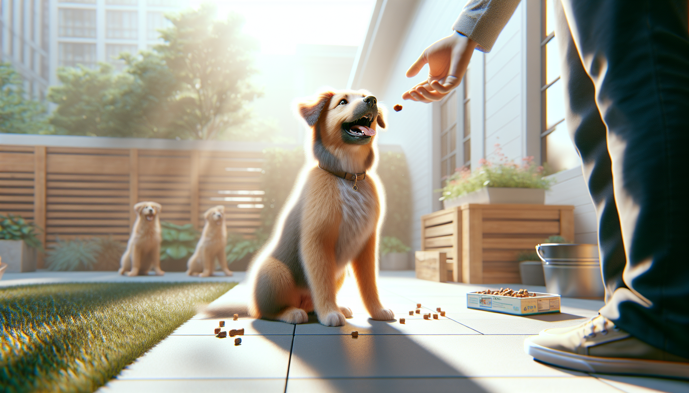

The first six months of a dog’s life are a powerful learning window. Whether you are raising a brand-new puppy or helping a young rescue settle into a new home, this stage is the perfect time to build the habits that create a safe, confident, and well-mannered companion. The good news is that early training does not need to be harsh, complicated, or time-consuming. In fact, the best results usually come from short, consistent, reward-based practice sessions that fit into everyday life.
If you are wondering what to focus on first, start with the commands that matter most for safety, communication, and daily living. While every dog is an individual, there are five foundational cues that nearly every dog should know by 6 months: sit, stay, come, leave it, and down. These commands help prevent problem behaviors, make outings easier, and strengthen the bond between you and your dog.
Below, we will break down why each command matters, how to teach it using science-backed positive reinforcement, and common mistakes to avoid. Remember: progress is not always linear. Puppies get distracted, adolescents test boundaries, and rescue dogs may need extra time to decompress. Be patient, keep sessions upbeat, and celebrate small wins.
Training is about much more than obedience. It gives your dog a way to understand what earns rewards, what keeps them safe, and how to succeed in a human world. Research and modern behavior science consistently support reward-based training because it improves learning, builds trust, and reduces stress compared to punishment-based methods.
By 6 months, dogs are often more mobile, curious, and confident than they were at 8 or 10 weeks. That means they are also more likely to jump, grab, dash toward distractions, or ignore you when something exciting appears. Teaching core commands early helps you guide those natural puppy impulses in productive ways.
Keep training sessions short, usually 3 to 5 minutes at a time for young dogs. Use small, tasty treats, praise, toys, or life rewards like going outside or getting a meal. Practice in low-distraction environments first, then slowly increase difficulty.
Sit is often the first command people teach, and for good reason. It is simple, practical, and versatile. A dog who can sit is easier to manage at the door, before meals, when greeting guests, and during moments of excitement. Sit also becomes a useful replacement behavior for jumping.
To teach sit, hold a treat near your dog’s nose and slowly move it upward and slightly back over their head. As their nose follows the treat, their rear will often lower to the ground naturally. The moment their bottom touches the floor, mark the behavior with a cheerful “yes” or a clicker, then reward. Once your dog is reliably offering the position, add the verbal cue “sit” just before you lure.
Practice in many real-life situations, but avoid repeating the cue over and over. Say it once, help your dog succeed, and reward generously. Over time, fade the lure so your dog responds to the word or a hand signal alone.
Common mistake: Pushing your dog’s rear down physically. This can confuse or discomfort some dogs and does not teach as effectively as shaping the behavior with rewards.
Stay teaches your dog to hold a position until released. This is incredibly useful for safety and daily routines, such as waiting at the front door, pausing while you prepare food, or staying calm while visitors enter. Stay is not just about stillness; it is about impulse control.
Begin with your dog in a sit or down. Say “stay,” show a flat hand signal, wait just one second, then mark and reward. Release your dog with a separate cue such as “free” or “okay.” The release cue is important because it tells your dog when the exercise is finished.
Gradually increase one element at a time: duration, distance, or distraction. Do not try to make the stay longer, farther, and harder all at once. If your dog breaks position, simply reset and make the next repetition easier. Success builds understanding.
For young puppies and newly adopted rescue dogs, even a 3-second stay is a great start. The goal by 6 months is not perfection. It is a reliable beginning that you can continue strengthening as your dog matures.
Common mistake: Calling your dog out of every stay. Sometimes return to your dog to reward them instead, so they learn that holding position is valuable.
If you teach only one life-saving command, make it come. A reliable recall can help prevent your dog from running into traffic, approaching another animal, or disappearing when off leash in an unsafe area. Recall is also one of the hardest behaviors to proof because the environment is often more exciting than you are. That is why you should make coming to you consistently rewarding.
Start indoors or in a fenced area. Say your dog’s name followed by “come” in a happy, upbeat voice. Move backward a few steps, clap, or crouch to encourage pursuit. When your dog reaches you, reward with high-value treats, praise, or a quick game. Make yourself fun and worth chasing.
Practice many short recalls throughout the day. Do not only call your dog for unpleasant things like nail trims, bath time, or leaving the park. If “come” predicts the end of fun, your dog will become less eager to respond. Instead, call your dog, reward, and then often let them go back to what they were doing.
As your dog improves, add a long line outdoors for safety and gradually train around mild distractions. Always set your dog up to win.
Common mistake: Repeating “come, come, come” while your dog ignores you. Instead, lower the difficulty and rebuild the behavior with better rewards and easier setups.
Leave it is a powerful preventive cue. It tells your dog to disengage from something and look to you instead. That “something” could be dropped food, trash on the sidewalk, a sock, medication, a dead bug, or anything unsafe or inappropriate. For puppies who explore the world with their mouths, leave it is essential.
One of the easiest ways to teach it is with a treat in your closed hand. Present your fist and let your dog sniff, lick, or paw. Say nothing at first. The moment they back off even slightly, mark and reward with a different treat from your other hand. Your dog learns that ignoring the item makes better rewards appear.
Once your dog is reliably moving away from the closed hand, add the cue “leave it.” Then progress to a treat on the floor covered by your hand or foot, and later to visible objects at a safe distance. The key is teaching your dog that disengagement pays.
Leave it is not the same as “drop it.” Leave it means do not touch that thing in the first place. Drop it means release something already in your mouth. Both are useful, but leave it often prevents the problem before it begins.
Common mistake: Advancing too quickly to highly tempting items. Build the skill gradually so your dog can succeed.
Down is more than a cute trick. It encourages a settled posture and can be incredibly helpful in homes, cafes, vet waiting rooms, and other situations where you want your dog to relax. Many dogs find down naturally calming, especially when paired with rewards and a quiet environment.
To teach down, begin with your dog in a sit or standing position. Hold a treat at their nose, then slowly move it down to the floor and slightly out in front of them. As their head follows, their elbows will often lower. The instant they lie down, mark and reward. Some dogs learn faster on a non-slip surface where they feel stable.
Once your dog understands the motion, add the verbal cue “down.” Keep your tone calm and positive. Reward generously for success, especially if your dog is energetic or finds stillness difficult. You can later build duration by feeding a few treats in position before releasing.
Down is especially useful as part of a settle routine. For example, you can ask for down on a mat while you drink coffee, answer emails, or chat with guests. This gives your dog a clear, rewarded job during downtime.
Common mistake: Forcing a dog into position. As with all cues, lure, shape, and reward rather than using physical pressure.
No matter which command you are teaching, a few core principles make training more effective. First, be consistent with your cues. Everyone in the household should use the same words and expectations. Second, train in short sessions so your dog stays engaged. Third, reinforce often. Behaviors that get rewarded get repeated.
For rescue adopters, remember that adjustment takes time. A newly adopted dog may need days or weeks before their true personality emerges. Focus first on trust, routine, and simple wins. For puppies, keep expectations age-appropriate. A 4-month-old dog is still learning how to focus in a busy world.
The five commands every dog should know by 6 months are not about creating a robot. They are about building communication, trust, and safety in the real world. Sit teaches polite behavior. Stay builds patience. Come can save your dog’s life. Leave it prevents dangerous mistakes. Down helps your dog relax and settle.
If your dog does not know all five yet, do not worry. Training is a process, not a race. Start with one command, practice daily in small doses, and make learning rewarding. Over time, these simple cues become the foundation for a well-behaved dog and a stronger relationship with you.
Get our full Dog Training eBook series — new titles added weekly.